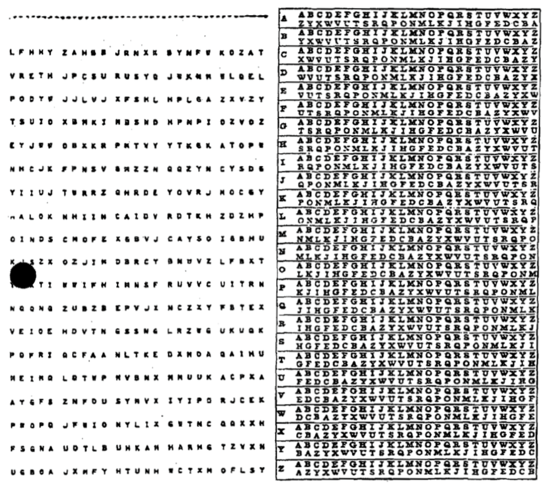
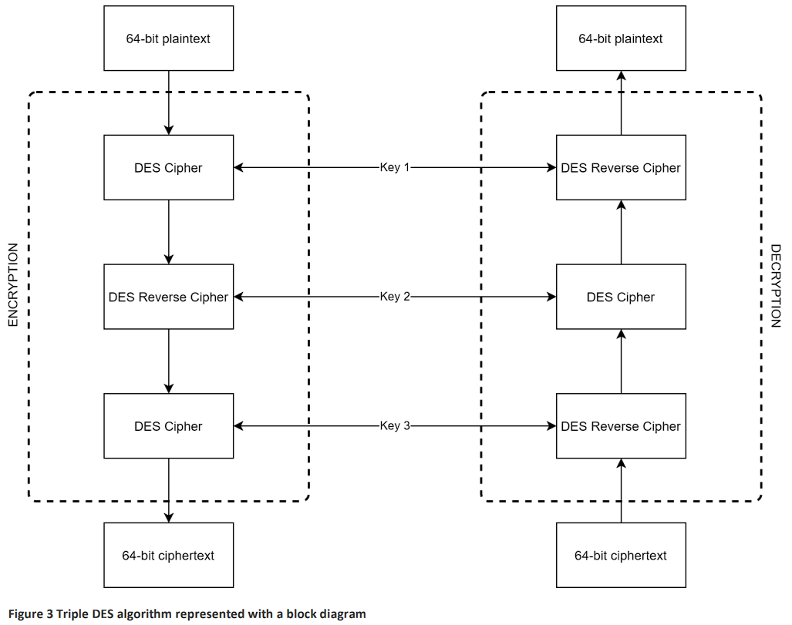

Data Security - Management#
Data has never been more valuable. It is an increasingly important driver of growth in our modern economy. Whether it is data about individuals, businesses or government, data underpins how we communicate, conduct business, and receive services. At the same time it can be stolen, manipulated or used as a weapon by foreign adversaries and criminals [of Home Affairs, 2023].
Data security is crucial because it safeguards sensitive information from unauthorized access, ensuring that personal, financial, and confidential data remains private and protected. In today’s digital age, where vast amounts of data are shared and stored online, the risk of data breaches and cyberattacks is significant. These breaches can result in identity theft, financial loss, reputational damage, and legal consequences.
Data breachers far more common than most people believe. The Office of the Australian Information Commissioner, publishes regular reports on breaches involving Australian organisations. Check the latest report to see the extent of data breaching occurring. Note that these are only the breaches that Australian Law requires organisations to report.
Data security measures, including encryption, access controls, and regular security audits, help prevent such incidents and ensure that individuals and organizations can trust that their data is safe and confidential. It’s not only about protecting information but also about maintaining trust, compliance with regulations, and upholding the integrity of data in an increasingly interconnected world.
The following techniques used to manage data effectively, ensuring it can be stored and transferred securely and efficiently.
Data Compression#
Data compression is the process of reducing the size of a file or data set. This means the data takes up less space on storage devices and can be transmitted more quickly over networks.
How Data Compression works#
Lossless Compression: This method reduces file size without losing any data. Think of it as packing your clothes tightly into a suitcase without leaving anything behind. When you unpack, everything is still there, just like it was before. Examples include ZIP files and PNG images.
Lossy Compression: This method reduces file size by removing some data that’s not crucial. It’s like packing your suitcase but deciding to leave behind some items you don’t really need. When you unpack, you still have most of your stuff, but some of the less important items are missing. Examples include MP3 audio files and JPEG images.
Why Data Compression important#
Saves Storage Space: Smaller files mean you can store more data on your devices.
Faster Transfers: Smaller files can be sent over the internet or other networks more quickly.
Encryption#
Encryption is the process of converting data into a coded format to prevent unauthorized access. It ensures that only authorized parties can read the information.
How Encryption works#
Encryption: Imagine you write a message in English and then translate it into a secret code that only your friend knows how to read. Even if someone else gets hold of the coded message, they can’t understand it without the key to decode it.
Decryption: Your friend uses the key to translate the coded message back into English so they can read it.
Why Encryption important#
Data encryption is necessary for several important reasons:
Data Security: Encryption helps protect sensitive information from unauthorized access. It ensures that even if someone gains access to the data, they won’t be able to read or use it without the encryption key.
Privacy: In an era of digital communication, maintaining personal privacy is crucial. Encryption ensures that your personal messages, emails, and data remain private and can’t be easily intercepted or eavesdropped upon.
Compliance: Many regulations and laws require organizations to protect sensitive data, such as personal or financial information. Encryption helps companies meet these compliance requirements and avoid legal issues.
Data Integrity: Encryption not only secures data from unauthorized access but also ensures that the data hasn’t been tampered with during transmission or storage. If encrypted data is altered, it becomes unreadable.
Protection Against Data Breaches: In the event of a data breach, encrypted data is significantly more challenging for attackers to use. Even if they gain access to encrypted data, it’s useless without the encryption key.
Secure Communication: Encryption is essential for securing online transactions, such as e-commerce purchases and online banking. It prevents hackers from intercepting sensitive financial information.
International Data Transfer: When data is transferred across borders, encryption can protect it from government surveillance or other forms of unauthorized access.
Types of Encryption#
Symmetric Encryption: The same key is used for both encryption and decryption. It’s like having one key for a lock that both you and your friend have copies of.
Asymmetric Encryption: Uses two keys—a public key for encryption and a private key for decryption. It’s like having a lock with two keys: one for locking (encrypting) that everyone can use, and one for unlocking (decrypting) that only you have.
Ciphers#
Caesar cipher#
The Caesar cipher is one of the simplest and most well-known encryption techniques. It is a type of substitution cipher where each letter in the plaintext is shifted a fixed number of places down or up the alphabet. It is named after Julius Caesar, who reportedly used it to protect his private correspondence.
How the Caesar Cipher Works#
Choose a Shift Value: Decide on the number of positions each letter will be shifted. For example, with a shift of 3:
A becomes D
B becomes E
C becomes F
…, and so on.
Encrypt the Plaintext: Replace each letter in the plaintext with the letter that appears a fixed number of positions down the alphabet.
For example, with a shift of 3, the word “HELLO” becomes “KHOOR”.
Decrypt the Ciphertext: To decrypt the message, shift the letters in the opposite direction by the same number of positions.
“KHOOR” with a shift of 3 back becomes “HELLO”.
Caesar Example#
Encryption Process:
Plaintext: “ATTACK AT DAWN”
Shift: 3
Ciphertext: “DWWDFN DW GDZQ”
Decryption Process:
Ciphertext: “DWWDFN DW GDZQ”
Shift: 3
Plaintext: “ATTACK AT DAWN”
Caesar Pseudocode#
Encryption
FUNCTION encrypt_caesar(plaintext, shift):
alphabet = "ABCDEFGHIJKLMNOPQRSTUVWXYZ"
result = ""
FOR each character 'char' in 'plaintext':
IF char IS a letter:
char = UPPERCASE(char)
position = POSITION(char IN alphabet)
new_position = (position + shift) MOD 26
result = result + alphabet[new_position]
ELSE:
result = result + char
RETURN result
Decryption
FUNCTION decrypt_caesar(ciphertext, shift):
alphabet = "ABCDEFGHIJKLMNOPQRSTUVWXYZ"
result = ""
FOR each character 'char' in 'ciphertext':
IF char IS a letter:
char = UPPERCASE(char)
position = POSITION(char IN alphabet)
new_position = (position - shift + 26) MOD 26
result = result + alphabet[new_position]
ELSE:
result = result + char
RETURN result
Caesar Characteristics and Security#
Simplicity: The Caesar cipher is very easy to understand and implement, making it an excellent introductory example of encryption.
Weak Security: It is vulnerable to brute force attacks since there are only 25 possible shifts (not counting the shift of 0, which leaves the text unchanged). Frequency analysis can also easily break the cipher because the letter frequencies in the ciphertext match those in the plaintext.
Requires Agreed Upon Key: Like all Symmetric Encryptions, Caesar Cipher requires the sender and receiver to agree upon a key prior to the message being sent.
Vigenère Cipher#
The Vigenère cipher is a method of encrypting alphabetic text by using a simple form of polyalphabetic substitution. It employs a keyword to determine the shift applied to each letter of the plaintext, making it more secure than the Caesar cipher.
How the Vigenère Cipher Works#
Choose a Keyword: A keyword is selected, and each letter of the keyword is used to create a different Caesar cipher shift.
For example, if the keyword is “KEY”, it corresponds to shifts of K=10, E=4, and Y=24.
Repeat the Keyword: The keyword is repeated to match the length of the plaintext.
For example, if the plaintext is “ATTACKATDAWN” and the keyword is “KEY”, the repeated keyword is “KEYKEYKEYKEY”.
Encrypt the Plaintext: Each letter of the plaintext is shifted according to the corresponding letter of the keyword. The shift is determined by converting the keyword letter into a number (A=0, B=1, …, Z=25).
Decrypt the Cyphertext: To decrypt the message, the same keyword is used. Each letter of the ciphertext is shifted back according to the corresponding letter of the keyword.
Vigenère Example#
Encryption process
Plaintext: ATTACKATDAWN
Keyword: KEYKEYKEYKEY
Encryption:
A (shift by K, 10 positions) -> K
T (shift by E, 4 positions) -> X
T (shift by Y, 24 positions) -> R
A (shift by K, 10 positions) -> K
C (shift by E, 4 positions) -> G
K (shift by Y, 24 positions) -> I
A (shift by K, 10 positions) -> K
T (shift by E, 4 positions) -> X
D (shift by Y, 24 positions) -> B
A (shift by K, 10 positions) -> K
W (shift by E, 4 positions) -> A
N (shift by Y, 24 positions) -> L
Ciphertext: KXRGIKXBKAL
Decryption Process
Ciphertext: KXRGIKXBKAL
Keyword: KEYKEYKEYKEY
Decryption:
K (shift back by K, 10 positions) -> A
X (shift back by E, 4 positions) -> T
R (shift back by Y, 24 positions) -> T
K (shift back by K, 10 positions) -> A
G (shift back by E, 4 positions) -> C
I (shift back by Y, 24 positions) -> K
K (shift back by K, 10 positions) -> A
X (shift back by E, 4 positions) -> T
B (shift back by Y, 24 positions) -> D
K (shift back by K, 10 positions) -> A
A (shift back by E, 4 positions) -> W
L (shift back by Y, 24 positions) -> N
Plaintext: ATTACKATDAWN
Vigenère Pseudocode#
Encryption
FUNCTION encrypt_vigenere(plaintext, keyword):
alphabet = "ABCDEFGHIJKLMNOPQRSTUVWXYZ"
result = ""
keyword_length = LENGTH(keyword)
FOR i FROM 0 TO LENGTH(plaintext) - 1:
char = plaintext[i]
IF char IS a letter:
char = UPPERCASE(char)
shift_char = UPPERCASE(keyword[i % keyword_length])
shift = POSITION(shift_char IN alphabet)
char_position = POSITION(char IN alphabet)
new_position = (char_position + shift) MOD 26
result += alphabet[new_position]
ELSE:
result += char
RETURN result
Decryption
FUNCTION decrypt_vigenere(ciphertext, keyword):
alphabet = "ABCDEFGHIJKLMNOPQRSTUVWXYZ"
result = ""
keyword_length = LENGTH(keyword)
FOR i FROM 0 TO LENGTH(ciphertext) - 1:
char = ciphertext[i]
IF char IS a letter:
char = UPPERCASE(char)
shift_char = UPPERCASE(keyword[i % keyword_length])
shift = POSITION(shift_char IN alphabet)
char_position = POSITION(char IN alphabet)
new_position = (char_position - shift + 26) MOD 26
result += alphabet[new_position]
ELSE:
result += char
RETURN result
Vigenère Characteristics and Security#
Polyalphabetic Substitution: The Vigenère cipher uses multiple Caesar ciphers, which makes frequency analysis attacks much more difficult compared to simple substitution ciphers.
Simple to Implement: The method is straightforward to implement and understand.
Keyword Repetition: If the keyword is significantly shorter than the plaintext, patterns may emerge, making the cipher vulnerable to Kasiski examination and other statistical attacks.
Keyword Guessing: If the attacker guesses or determines the length of the keyword, the Vigenère cipher can be broken using methods like frequency analysis.
Requires Agreed Upon Key: Like all Symmetric Encryptions, Vigenère Cipher requires the sender and receiver to agree upon a key prior to the message being sent.
Gronsfeld Cipher#
The Gronsfeld cipher is a variant of the Vigenère cipher that uses a numeric key instead of a keyword to shift the letters of the plaintext. It shares many similarities with the Vigenère cipher but simplifies the key by restricting it to numeric digits, making it somewhat easier to use and remember.
One-time Pad Encryption#
The one-time pad (OTP) encryption is a theoretically unbreakable encryption technique that involves a random key that is as long as the message being encrypted. It was first described by Frank Miller in 1882 and later formalized by Gilbert Vernam in 1917.

How OTP Encryption Works#
Key Generation: Generate a truly random key that is the same length as the plaintext message. This key must be kept completely secret and used only once.
Encryption:
Convert the plaintext message and the key into numerical form (e.g., using the ASCII values of characters).
Perform bitwise XOR (exclusive OR) operation between the numerical representations of the plaintext and the key to produce the ciphertext.
Decryption:
Convert the ciphertext and the key into numerical form.
Perform bitwise XOR operation between the numerical representations of the ciphertext and the key to retrieve the original plaintext.
Characteristics and Security#
Perfect Security: If the key is truly random, kept secret, and never reused, the one-time pad is theoretically unbreakable. This is because every possible plaintext of the same length as the ciphertext is equally likely.
No Patterns: Since the key is random and as long as the message, there are no patterns that an attacker can exploit.
Key Distribution: The key must be distributed securely to both the sender and the receiver, which can be impractical for large-scale use.
Scalability: The need for a key that is as long as the message makes it impractical for large amounts of data.
Symmetric Encryption#
Symmetric encryption is a type of encryption where only one key (a secret key) is used to both encrypt and decrypt electronic information. The entities communicating via symmetric encryption must exchange the key so that it can be used in the decryption process.
By using symmetric encryption algorithms, data is converted to a form that cannot be understood by anyone who does not possess the secret key to decrypt it. Once the intended recipient who possesses the key has the message, the algorithm reverses its action so that the message is returned to its original and understandable form. The secret key that the sender and recipient both use could be a specific password/code or it can be random string of letters or numbers that have been generated by a secure random number generator.
There are two types of symmetric encryption algorithms:
Block algorithms: Set lengths of bits are encrypted in blocks of electronic data with the use of a specific secret key. As the data is being encrypted, the system holds the data in its memory as it waits for complete blocks.
Stream algorithms: Data is encrypted as it streams instead of being retained in the system’s memory.
Symmetric Encryption Uses#
While symmetric encryption is an older method of encryption, it is faster and more efficient than asymmetric encryption. Symmetric cryptography is typically used for encrypting large amounts of data, e.g. for database encryption. In the case of a database, the secret key might only be available to the database itself to encrypt or decrypt.
Some examples of where symmetric cryptography is used are:
Payment applications, such as card transactions where personal identifying information needs to be protected to prevent identity theft or fraudulent charges
Validations to confirm that the sender of a message is who they claim to be
Random number generation or hashing
Block Ciphers#
A block cipher takes a block of plaintext bits and generates a block of ciphertext bits, generally of same size. The size of block is fixed in the given scheme. The choice of block size does not directly affect to the strength of encryption scheme. The strength of cipher depends up on the key length.
Feistel Block Cipher#
A Feistel block cipher is not an encryption method in itself. It is a model or process that is used by many block ciphers to encode the plain text into a cipher text. A Feistel cipher requires a key and a set length portion of the plain text and occurs over a designated number of rounds.
Data Encryption Standard (DES):#
DES is a symmetric key algorithm developed in the 1970s by IBM and later adopted by the U.S. government as a standard. It uses a 56-bit key to encrypt 64-bit blocks of data. DES operates on data using 16 rounds of Feistel network, which involves permutations, substitutions, and XOR operations.
DES is now considered insecure for many applications due to its relatively short key length, which makes it vulnerable to brute-force attacks.
Triple DES (3DES):#
Triple DES enhances the security of DES by applying the DES algorithm three times to each data block. It uses three 56-bit keys, effectively giving it a 168-bit key length, though due to some weaknesses, its effective security is closer to 112 bits.
Despite its increased security, 3DES is slower than other modern symmetric algorithms.

Advanced Encryption Standard (AES):#
AES is the current U.S. federal standard for encryption, replacing DES and 3DES. It supports key sizes of 128, 192, and 256 bits and operates on 128-bit blocks of data. AES uses a substitution-permutation network with 10, 12, or 14 rounds depending on the key size.
AES is widely regarded as secure and is used globally in various applications.
Blowfish#
Blowfish is a symmetric key block cipher designed by Bruce Schneier in 1993. It has a variable key length from 32 bits to 448 bits, making it highly flexible. Blowfish operates on 64-bit blocks and is known for its speed and effectiveness in hardware applications. It uses a Feistel network with 16 rounds of processing.
While secure, Blowfish’s 64-bit block size is now considered a limitation for certain applications.
Twofish#
Twofish is a symmetric key block cipher, also designed by Bruce Schneier as a successor to Blowfish. It operates on 128-bit blocks and supports key sizes up to 256 bits. Twofish uses a Feistel network and is optimized for hardware and software performance.
Twofish is known for its flexibility, speed, and security, making it a strong contender in the AES competition.
Asymmetric Encryption#
The biggest weakness of symmetric encryption is the need for key distribution. That is, there needs to be a secure way for all parties to agree upon the key that will be used for encryption and decryption. This is very effective, if you wish to encrypt data on your hard-drive, or in a database on your server. Unfortunately symmetric encryption is not practical when it comes to online communication, for this we need asymmetric encryption.
Asymmetric communication refers to a method of communication in which the parties involved use different keys for encryption and decryption processes. This is a key feature of asymmetric encryption, also known as public-key cryptography.
Key Components of Asymmetric Communication#
The public key is openly distributed and used to encrypt data. Anyone can use this key to encrypt a message intended for a specific recipient. For example, if Alice wants to send a secure message to Bob, she would use Bob’s public key to encrypt the message.
The private key is kept secret and is used to decrypt data that has been encrypted with the corresponding public key. Continuing the example, Bob would use his private key to decrypt the message sent by Alice.
How Asymmetric Communication Works#
The sender (Alice) and the receiver (Bob) agree and communicate the public parameters (prime modulus and a generator).
Alice then chooses a private key and calculates a public key, which she share publicly with Bob.
Bob selects his own private key, calculates a public key, and shares it publicly with Alice.
Alice takes Bob’s public key and raises it to the power of her private key to compute a shared key.
Bob does the same with Alice’s public key and his private key to also establish the shared key.
Alice and Bob now have a shared key they can use for symmetrical encryption.
With knowing Alice’s or Bob’s private keys Eve cannot derive the shared key.
Advantages of Asymmetric Communication#
Asymmetric communication enhances security because the private key is never shared and remains secure with the owner. Even if the public key is widely distributed, only the intended recipient can decrypt the message.
Asymmetric encryption also simplifies key distribution. Unlike symmetric encryption, where the same key must be securely shared between parties, the public key can be freely distributed without compromising security.
Disadvantages of Asymmetric Communication#
Asymmetric encryption algorithms are generally slower than symmetric algorithms, making them less suitable for encrypting large amounts of data directly.
The process of managing public and private keys and ensuring their integrity also adds complexity to the system.
Applications of Asymmetric Communication#
Email encryption services often use asymmetric encryption to ensure that only the intended recipient can read the email.
Secure websites use SSL/TLS protocols, which rely on asymmetric encryption to establish secure connections between a user’s browser and the web server.
Digital Signatures used in software distribution, digital contracts, and other scenarios where verifying the sender’s identity and ensuring the message’s integrity is crucial.
Try Asymmetric Communication#
Work in threes and take the roles of Alice, Bob and Eve.
Alice and Bob agree and publicly share a prime modulus
Alice and Bob agree and publicly share a generator
Alice and Bob both choose a private key
Exchange of public keys
Alice and bob perform the following calculation and share the results publically:
public_key = generator ** private_key % prime_modulus
Alice and Bob now work out the shared secret key
Use the following calculations:
# for Alice
shared_key = bob_pub_key ** alice_private_key % prime_modulus
# for Bob
shared_key = alice_pub_key ** bob_private_key % prime_modulus
Alice and Bob now use the shared key to send messages using Caesar cipher to each other, and Eve attempts to work out the message.
RSA#
RSA is one of the most widely used asymmetric encryption algorithms, developed by Ron Rivest, Adi Shamir, and Leonard Adleman in 1977. It relies on the mathematical difficulty of factoring large prime numbers.
RSA uses two keys a public key for encryption and a private key for decryption. Key lengths typically range from 2048 to 4096 bits, providing strong security. It is commonly used in secure data transmission, digital signatures, and key exchange protocols.
RSA is computationally intensive and slower compared to symmetric algorithms, making it less suitable for encrypting large amounts of data directly.
Hashing#
Hashing is the process of converting data into a fixed-size string of characters, which typically looks like a random sequence of letters and numbers. This is done using a specific algorithm.
How Hashing works#
Think of hashing as creating a unique fingerprint for a set of data. Just like no two people have the same fingerprint, no two sets of data will have the same hash (in theory).
Hash functions take an input (or ‘message’) and return a fixed-size string of bytes. The output is typically a “digest” that represents the input data.
Why Hashing important#
Data Integrity: Hashes are used to ensure data hasn’t been altered. For example, when you download a file, a hash can be created for that file. After downloading, you can check the hash to make sure the file wasn’t corrupted or tampered with during transfer.
Password Storage: Instead of storing actual passwords, systems store hashes of passwords. When you log in, your password is hashed and compared to the stored hash. This way, even if someone accesses the password database, they can’t easily recover the actual passwords.
Unit 4 subject matter covered:
Recognise and describe encryption and authentication strategies appropriate for securing data transmissions and their differences
Recognise and describe features of symmetric (Data Encryption Standard — DES, Triple DES, AES — Advanced Encryption Standard, Blowfish and Twofish) and assymetric (RSA) encryption algorithms
Recognise and describe how data compression, encryption and hashing are used in the storage and transfer of data
Symbolise, analyse and evaluate Caesar, Polyalphabetic (e.g. Vigenere and Gronsfield), and one-time pad encryption algorithms
Symbolise and explain secure data transmission techniques and processes, including the use of encryption, decryption, authentication, hashing and checksums [QCAA, 2017]